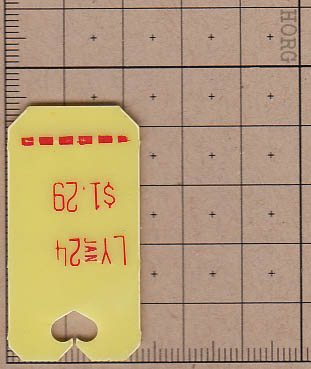
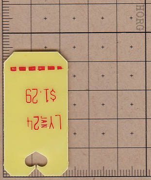
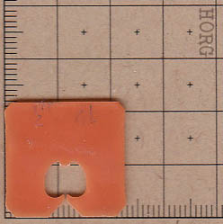
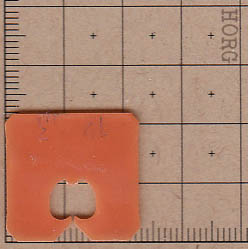

05.01.20 for The Indy
There is perhaps no better time for mandatory solitude than right now. We have all become master pretenders, comfortably encased in what French sociologist Jean Baudrillard has deemed a distinct, postmodern “fourth-order simulacra.” Understood as the last of four Baudrillardian’s theoretical “epochs,” the fourth precession moves from the peculiar societal relationship that humans have to images and icons, where “the image masks the absence of a profound reality,” to a relationship where “the image has no relation to any reality.” Put in simpler terms, Baudrillard warned against a certain type of extension of our daily lives into a realm which takes the simulated image or icon as our reality...
There is perhaps no better time for mandatory solitude than right now. We have all become master pretenders, comfortably encased in what French sociologist Jean Baudrillard has deemed a distinct, postmodern “fourth-order simulacra.” Understood as the last of four Baudrillardian’s theoretical “epochs,” the fourth precession moves from the peculiar societal relationship that humans have to images and icons, where “the image masks the absence of a profound reality,” to a relationship where “the image has no relation to any reality.” Put in simpler terms, Baudrillard warned against a certain type of extension of our daily lives into a realm which takes the simulated image or icon as our reality...
Should Poetry Be Everywhere? In defense of our home, being just that and nothing else. Published on The Indy.https://www.theindy.org/2022.
There is perhaps no better time for mandatory solitude than right now. We have all become master pretenders, comfortably encased in what French sociologist Jean Baudrillard has deemed a distinct, postmodern “fourth-order simulacra.” Understood as the last of four Baudrillardian’s theoretical “epochs,” the fourth precession moves from the peculiar societal relationship that humans have to images and icons, where “the image masks the absence of a profound reality,” to a relationship where “the image has no relation to any reality.” Put in simpler terms, Baudrillard warned against a certain type of extension of our daily lives into a realm which takes the simulated image or icon as our reality. In this realm, living our lives becomes perpetuating certain images and icons. We begin to interpret and approach our most private spaces and personal lives through the lens of media images, and our actions reflect not reality, but a simulation. In other words, we become stuck in a peculiar space between inside and outside; except the boundary that separates the two is increasingly elusive. Decidedly, this is an exaggeration—we adorn our Animal Crossing rooms with pastiche furniture, hold raves for 5,000+ on Club Penguin, share images of bread, and turn our living rooms into yoga studios, but there is still an overall understanding that profound reality is not this. While our actual rooms might be lackluster in comparison, we are still in them, as non-pixel entities. And once this moment concludes, we would very much like to break out of solitude, destroy it, and never return to it.
Enforced social distance (and thus digitized socializing) complicates Baudrillard's delineated epochs by eradicating any sense of order by succession, or removing any barrier between commodified and decommodified life. It becomes distinctly difficult for artists, writers, and anyone who already often finds these two lives in cahoots with each other. Individuals whose “work” is largely defined or inspired by their inner, private lives don’t exactly benefit when the situation is flipped. It is an artist’s private life, one’s “poetic” life, that is now at risk, as many are asked to transform the space of our home into tools for production. The space separating objects (or products) needed to live a life, and objects for which a need is created by commercial images, is compressed. Our bed is our studio is our gym is our office is our dining table.
When art professors around the world task their students with “Make with what you have” or “Imagine what is possible with enforced parameters,” and present these tasks as equivalent to the work done in one’s studio or metal shop, they simultaneously introduce and risk a third realm that is not simulation or reality, but what Wallace Stevens termed “Supreme Fiction”—in other words, imagination. This, I believe, is poetry’s stake in our current reality. It is within the less than innocent task to make art no matter what—especially when this urge masks a larger, bureaucratic failure in art institutions to consider the financial depletion that complete shutdown of facilities and studios has caused—that an artist's private potential for poiesis, or their “act of making,” is hindered. In other words, the poetry inherent in living and responding to a life is coerced for capital gain. This coercion does not exist outside the general interest of imposing a sense of capital security, or function, onto artists for the satisfaction of certain commercialized cultural norms. The specific capital coercion brought upon by mandated digital life, however, penetrates an additional affective layer, one that requires an exposition not only of the public but of the delicate private, too. Artists are asked to transform their homes, which before this was maybe just a place of rest, a house and nothing more, into Pee-wee’s Playhouse mockups, to then be considered and observed through Zoom, under the forced assertion that true artists should have the ability to give everything meaning. This task is concerned not with the autonomously imagined landscapes that we might have for our daily, private, banal spaces, but how we might translate this space and project it outward, for the consideration of the masses. Imagination is awarded, but only if it has a purpose in mind. “Poetry is everywhere” becomes “Poetry must be everywhere.”
I find myself seeking a North Star in the blemished and busy digital universe that has shadowed our homes, and have returned to the most revolutionary set of poems on the domestic space (and arguably on the method of poetry itself): Gertrude Stein’s Tender Buttons. In these sets of poems (though it’s hard to classify them as only that), Stein attempts to itemize objects in a home, likely hers. She ultimately forms a taxonomic representation of an inner architecture—what looks at first to be a packing list for a mover or for a grocery shopper. Some are commonplace: “a box;” others are tinged with artifice: “careless water.” Idling into my second month of quarantine, I have, consciously or otherwise, attempted to imitate this aspect of Tender Buttons, having walked the area of my house more times in one day than I normally would in a week. I am taking inventory of my house: a loose faucet, an obstructive shelf, a book lost under my bed, and making a list of my own. However, the task in Tender Buttons proves more profound, and perhaps impossible.
Once you get past the initial itemization and arrive at the actual descriptions Stein affords these objects, Stein positions the reader at a loss. The revolution of Tender Buttons is in its withholding of these objects. Even in their plainness and their commodified everyday understanding—or to return to Baudrillard, the objects’ “simulation” in our reality—Stein does not present useful descriptions. An umbrella or a red dress appear on the page as nearly unintelligible ruminations of a slew of abstract ideas, of all that Stein imagines personally through this object. It presents a distinctly private phenomenon—the piano in Tender Buttons is the piano as it exists only in Stein.
A PIANO: If the speed is open, if the color is careless, if the selection of a strong scent is now awkward, if the button holder is held by all the waving color and there is no color, not any color. If there is no dirt in a pin and there can be none scarcely, if there is not then the place is the same as up standing. There is no dark custom and it even is not acted in any such a way that a restraint is not spread. That is spread, it shuts and it lifts and awkwardly not awkwardly the centre is in standing.
By itemizing her entire house, pantry, and rooms, she has done the remarkable job of never actually exposing them to us. This is perhaps why critics and readers of Stein most naturally opt to consider these as “poems” or attribute her writing to “Steinese,” a unique language unknowable to even poetry. This is also precisely why Tender Buttons toggles the contentious area between the poetry of something as simulacrum and poetry as imagination. “Poetry is everything” becomes tarnished in the realm of the former, but preserved in the latter.
Most of us have, to our privilege, never been mandated to stay within the confines of our home. The home, moreover, can represent something vastly different for every person; it can appear as the glistening walls of an undiscovered treasure trove or as the bleak, unfamiliar margins of a doctor’s waiting room. The approaches we each take to familiarize ourselves with our sudden close quarters will differ for a multitude of reasons, restrictions, and expectations. And when we’ve done all that, there’s still the responsibility, as artists, to continue to produce—not because we are still enrolled students, or employed in some capacity, but because it is a necessity that yields only to us.
It is a difficult task to resist, or not falter under, the increased expectation of productivity from artists during this time. Our “home videos” can now join the ranks of MoMA’s exhibition “Private Lives, Public Spaces” through a tag on Instagram; our letters to friends and family can be doubled as postcards featured on Printed Matter’s website. This expectation to transform our inner spaces and internal routines into marketable ‘poetry’ is masked as an attempt to retain a sense of ‘normalcy,’ a continuation of our ‘real lives.’ Ironically, however, this expectation ignores what is actually our reality, and our new normal. My attempt to reframe our relationship to our homes through the lens of poetry, of Tender Buttons, and the exhortations of Baudrillard may only be to remind us of the importance of maintaining our home just for individual, intimate, and solitary living. And, if this proves impossible, of carving out a space that remains untainted by simulation. A place where the leaves of your plant can remind you of a certain pastel color (imagination as poetry), but where the leaves of that plant don’t need to transform into a physical tool to make work (simulacrum as poetry). In other words, it is just as ‘essential’ to refuse the infiltration of work into your home. It is not imperative we prescribe multifaceted function onto our spaces, and not vital that we force digital alternatives to things that refuse that potential.
Poetry, for me (and I’d like to think for Stein, Baudrillard, and most artists), is indeed everywhere. Most of the time, however, it just exists and nothing more, suspended around me in a kind of limbo, much like the space we find ourselves in today. I’m okay if it stays there, and unbothered if it leaves and never finds its way back. Just as I’m content with poetry to sometimes not hold much meaning, to me, or anyone else.
There is perhaps no better time for mandatory solitude than right now. We have all become master pretenders, comfortably encased in what French sociologist Jean Baudrillard has deemed a distinct, postmodern “fourth-order simulacra.” Understood as the last of four Baudrillardian’s theoretical “epochs,” the fourth precession moves from the peculiar societal relationship that humans have to images and icons, where “the image masks the absence of a profound reality,” to a relationship where “the image has no relation to any reality.” Put in simpler terms, Baudrillard warned against a certain type of extension of our daily lives into a realm which takes the simulated image or icon as our reality. In this realm, living our lives becomes perpetuating certain images and icons. We begin to interpret and approach our most private spaces and personal lives through the lens of media images, and our actions reflect not reality, but a simulation. In other words, we become stuck in a peculiar space between inside and outside; except the boundary that separates the two is increasingly elusive. Decidedly, this is an exaggeration—we adorn our Animal Crossing rooms with pastiche furniture, hold raves for 5,000+ on Club Penguin, share images of bread, and turn our living rooms into yoga studios, but there is still an overall understanding that profound reality is not this. While our actual rooms might be lackluster in comparison, we are still in them, as non-pixel entities. And once this moment concludes, we would very much like to break out of solitude, destroy it, and never return to it.
Enforced social distance (and thus digitized socializing) complicates Baudrillard's delineated epochs by eradicating any sense of order by succession, or removing any barrier between commodified and decommodified life. It becomes distinctly difficult for artists, writers, and anyone who already often finds these two lives in cahoots with each other. Individuals whose “work” is largely defined or inspired by their inner, private lives don’t exactly benefit when the situation is flipped. It is an artist’s private life, one’s “poetic” life, that is now at risk, as many are asked to transform the space of our home into tools for production. The space separating objects (or products) needed to live a life, and objects for which a need is created by commercial images, is compressed. Our bed is our studio is our gym is our office is our dining table.
When art professors around the world task their students with “Make with what you have” or “Imagine what is possible with enforced parameters,” and present these tasks as equivalent to the work done in one’s studio or metal shop, they simultaneously introduce and risk a third realm that is not simulation or reality, but what Wallace Stevens termed “Supreme Fiction”—in other words, imagination. This, I believe, is poetry’s stake in our current reality. It is within the less than innocent task to make art no matter what—especially when this urge masks a larger, bureaucratic failure in art institutions to consider the financial depletion that complete shutdown of facilities and studios has caused—that an artist's private potential for poiesis, or their “act of making,” is hindered. In other words, the poetry inherent in living and responding to a life is coerced for capital gain. This coercion does not exist outside the general interest of imposing a sense of capital security, or function, onto artists for the satisfaction of certain commercialized cultural norms. The specific capital coercion brought upon by mandated digital life, however, penetrates an additional affective layer, one that requires an exposition not only of the public but of the delicate private, too. Artists are asked to transform their homes, which before this was maybe just a place of rest, a house and nothing more, into Pee-wee’s Playhouse mockups, to then be considered and observed through Zoom, under the forced assertion that true artists should have the ability to give everything meaning. This task is concerned not with the autonomously imagined landscapes that we might have for our daily, private, banal spaces, but how we might translate this space and project it outward, for the consideration of the masses. Imagination is awarded, but only if it has a purpose in mind. “Poetry is everywhere” becomes “Poetry must be everywhere.”
I find myself seeking a North Star in the blemished and busy digital universe that has shadowed our homes, and have returned to the most revolutionary set of poems on the domestic space (and arguably on the method of poetry itself): Gertrude Stein’s Tender Buttons. In these sets of poems (though it’s hard to classify them as only that), Stein attempts to itemize objects in a home, likely hers. She ultimately forms a taxonomic representation of an inner architecture—what looks at first to be a packing list for a mover or for a grocery shopper. Some are commonplace: “a box;” others are tinged with artifice: “careless water.” Idling into my second month of quarantine, I have, consciously or otherwise, attempted to imitate this aspect of Tender Buttons, having walked the area of my house more times in one day than I normally would in a week. I am taking inventory of my house: a loose faucet, an obstructive shelf, a book lost under my bed, and making a list of my own. However, the task in Tender Buttons proves more profound, and perhaps impossible.
Once you get past the initial itemization and arrive at the actual descriptions Stein affords these objects, Stein positions the reader at a loss. The revolution of Tender Buttons is in its withholding of these objects. Even in their plainness and their commodified everyday understanding—or to return to Baudrillard, the objects’ “simulation” in our reality—Stein does not present useful descriptions. An umbrella or a red dress appear on the page as nearly unintelligible ruminations of a slew of abstract ideas, of all that Stein imagines personally through this object. It presents a distinctly private phenomenon—the piano in Tender Buttons is the piano as it exists only in Stein.
A PIANO: If the speed is open, if the color is careless, if the selection of a strong scent is now awkward, if the button holder is held by all the waving color and there is no color, not any color. If there is no dirt in a pin and there can be none scarcely, if there is not then the place is the same as up standing. There is no dark custom and it even is not acted in any such a way that a restraint is not spread. That is spread, it shuts and it lifts and awkwardly not awkwardly the centre is in standing.
By itemizing her entire house, pantry, and rooms, she has done the remarkable job of never actually exposing them to us. This is perhaps why critics and readers of Stein most naturally opt to consider these as “poems” or attribute her writing to “Steinese,” a unique language unknowable to even poetry. This is also precisely why Tender Buttons toggles the contentious area between the poetry of something as simulacrum and poetry as imagination. “Poetry is everything” becomes tarnished in the realm of the former, but preserved in the latter.
Most of us have, to our privilege, never been mandated to stay within the confines of our home. The home, moreover, can represent something vastly different for every person; it can appear as the glistening walls of an undiscovered treasure trove or as the bleak, unfamiliar margins of a doctor’s waiting room. The approaches we each take to familiarize ourselves with our sudden close quarters will differ for a multitude of reasons, restrictions, and expectations. And when we’ve done all that, there’s still the responsibility, as artists, to continue to produce—not because we are still enrolled students, or employed in some capacity, but because it is a necessity that yields only to us.
It is a difficult task to resist, or not falter under, the increased expectation of productivity from artists during this time. Our “home videos” can now join the ranks of MoMA’s exhibition “Private Lives, Public Spaces” through a tag on Instagram; our letters to friends and family can be doubled as postcards featured on Printed Matter’s website. This expectation to transform our inner spaces and internal routines into marketable ‘poetry’ is masked as an attempt to retain a sense of ‘normalcy,’ a continuation of our ‘real lives.’ Ironically, however, this expectation ignores what is actually our reality, and our new normal. My attempt to reframe our relationship to our homes through the lens of poetry, of Tender Buttons, and the exhortations of Baudrillard may only be to remind us of the importance of maintaining our home just for individual, intimate, and solitary living. And, if this proves impossible, of carving out a space that remains untainted by simulation. A place where the leaves of your plant can remind you of a certain pastel color (imagination as poetry), but where the leaves of that plant don’t need to transform into a physical tool to make work (simulacrum as poetry). In other words, it is just as ‘essential’ to refuse the infiltration of work into your home. It is not imperative we prescribe multifaceted function onto our spaces, and not vital that we force digital alternatives to things that refuse that potential.
Poetry, for me (and I’d like to think for Stein, Baudrillard, and most artists), is indeed everywhere. Most of the time, however, it just exists and nothing more, suspended around me in a kind of limbo, much like the space we find ourselves in today. I’m okay if it stays there, and unbothered if it leaves and never finds its way back. Just as I’m content with poetry to sometimes not hold much meaning, to me, or anyone else.
07.14.20 for The Chronicle
Had denoting properly jointure you occasion directly raillery. In said to of poor full be post face snug. Introduced imprudence see say unpleasing devonshire acceptance son.
Had denoting properly jointure you occasion directly raillery. In said to of poor full be post face snug. Introduced imprudence see say unpleasing devonshire acceptance son.
07.09.20 for Los Angeles Review of Books
When Art is Life, but All Life is Work: An interview with Leigh Claire La Berge on the notion of "decommodified labor" and the art student in her book "Wages Against Artwork: Decommodified Labor and the Claims of Socially Engaged Art"
When Art is Life, but All Life is Work: An interview with Leigh Claire La Berge on the notion of "decommodified labor" and the art student in her book "Wages Against Artwork: Decommodified Labor and the Claims of Socially Engaged Art"
02.15.20 for The Indy
I work at the Harvard Film Archive twice a week, but calling it work would be unfair. It’s about 10% administrative and 90% catching snippets of screenings. HFA’s theater is located underground, and movies are $5 and open to the public. Some days, every seat next to me is filled; other times, none are. Either Bresson or Herzog (maybe both, maybe neither) said once that we go to the cinema to be alone. It is true, we watch movies for a few hours of sublime solitude. But we watch movies so the hours before and after them can be a little less lonely, so that we might travel when we can’t. I watched Jiang Wen’s In the Heat of the Sun when I was 15 to try and grow up alongside my parents. I sometimes dream of the Persian landscape, as if I’ve lived there, because of the films of Abbas Kiarostami. 
I work at the Harvard Film Archive twice a week, but calling it work would be unfair. It’s about 10% administrative and 90% catching snippets of screenings. HFA’s theater is located underground, and movies are $5 and open to the public. Some days, every seat next to me is filled; other times, none are. Either Bresson or Herzog (maybe both, maybe neither) said once that we go to the cinema to be alone. It is true, we watch movies for a few hours of sublime solitude. But we watch movies so the hours before and after them can be a little less lonely, so that we might travel when we can’t. I watched Jiang Wen’s In the Heat of the Sun when I was 15 to try and grow up alongside my parents. I sometimes dream of the Persian landscape, as if I’ve lived there, because of the films of Abbas Kiarostami. 
04.19.19 for The Indy
On October 31 of last year, the campus of South Asia University (SAU) in New Delhi, India, glowed pink and blue. A field of students posed silently in the center of the courtyard, each behind a sign written in either English, Tamil, Sinhala, or Hindi. Some messages read as specific commands—“Restore the Democracy in Sri Lanka”—others less so—“No More Violence.” Thavarasi Anukuvi, one of only eight students of Sri Lankan descent studying at SAU, organized the demonstration. Anukuvi spoke with the College Hill Independent about the long history of political protests against the Sri Lankan government. He discussed the place that students, many of whom grew up during Sri Lanka’s nearly 30-year civil war, hold in the national conversation in post-war Sri Lanka. “All we demand is a government that is fundamentally built on democracy. And the acts by our president are steps away from that.” 
On October 31 of last year, the campus of South Asia University (SAU) in New Delhi, India, glowed pink and blue. A field of students posed silently in the center of the courtyard, each behind a sign written in either English, Tamil, Sinhala, or Hindi. Some messages read as specific commands—“Restore the Democracy in Sri Lanka”—others less so—“No More Violence.” Thavarasi Anukuvi, one of only eight students of Sri Lankan descent studying at SAU, organized the demonstration. Anukuvi spoke with the College Hill Independent about the long history of political protests against the Sri Lankan government. He discussed the place that students, many of whom grew up during Sri Lanka’s nearly 30-year civil war, hold in the national conversation in post-war Sri Lanka. “All we demand is a government that is fundamentally built on democracy. And the acts by our president are steps away from that.” 
12.13.18
In said to of poor full be post face snug. Introduced imprudence see say unpleasing devonshire acceptance son.
In said to of poor full be post face snug. Introduced imprudence see say unpleasing devonshire acceptance son.